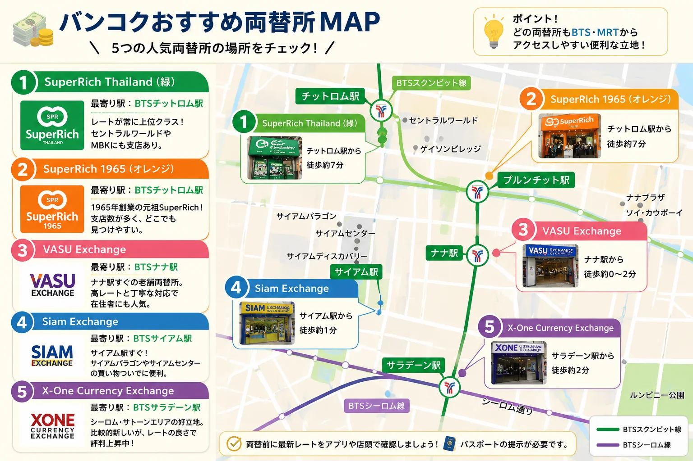
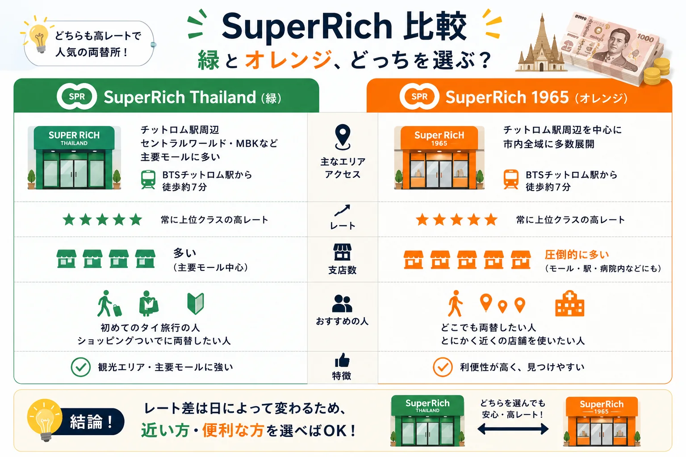
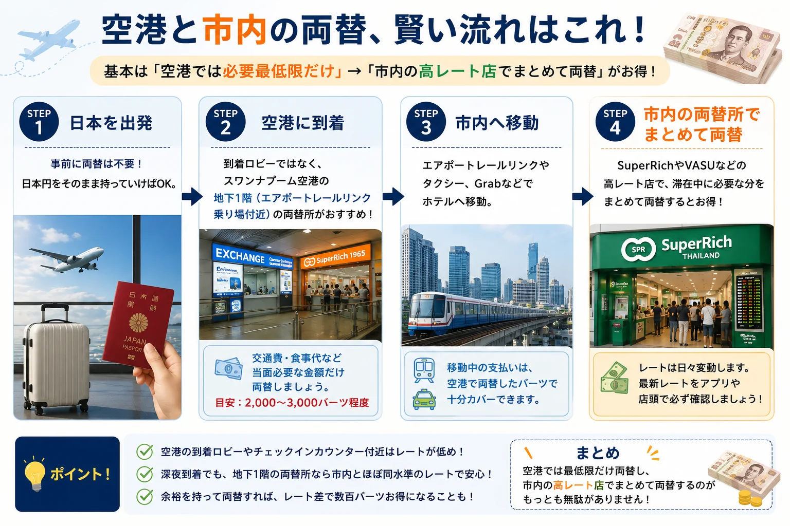
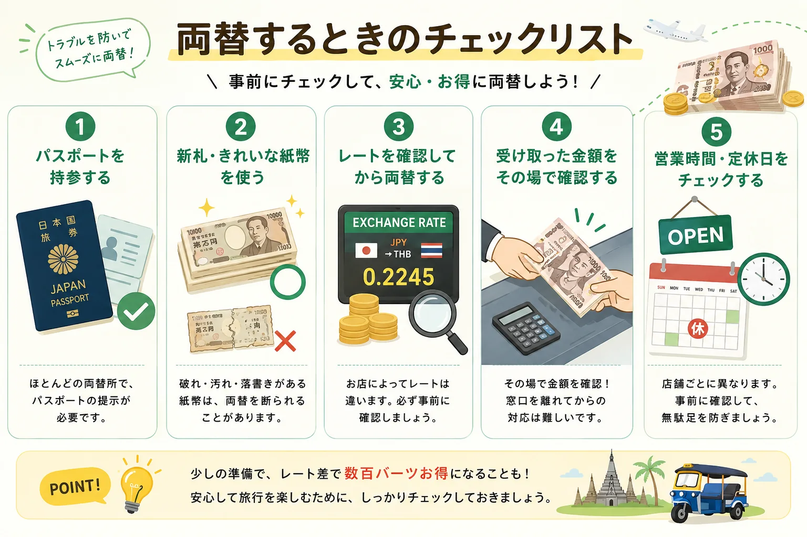

タイ旅行で両替所選びが大切な理由
タイ旅行の準備をしていて、意外と見落としがちなのが「どこで両替するか」問題です。
実は同じ1万円でも、両替所によって受け取れるバーツの額は変わります。空港とバンコク市内の有名両替所を比べると、1万円で200〜300バーツ近く差が出ることも珍しくありません。屋台のパッタイなら5〜6杯分です。
この記事では、バンコクで評判の良い両替所を実際の特徴付きで紹介します。読み終わる頃には、自分の滞在エリアに合った両替所が見つかるはずです。
結論：迷ったらSuperRichを選べば間違いない
初めてのタイ旅行で両替所選びに迷ったら、SuperRichを選んでおけばまず失敗しません。
- レートが常に上位クラス
- 支店数が多く、旅行動線上で見つけやすい
- 観光客の利用実績が豊富で、安心感がある
ただし注意したいのが、「SuperRich」という名前を掲げる会社が実は複数あること。緑ロゴの「SuperRich Thailand」とオレンジロゴの「SuperRich 1965」は、もともと同じ創業者一族から分かれた別会社です。さらに「Grand Superrich」という水色ロゴの系列も存在します。
名前は似ていますが経営は別々、という点だけ覚えておきましょう。

バンコクのおすすめ両替所比較
まずは、旅行者が使いやすいバンコクの人気両替所を一覧で確認しておきましょう。
| 両替所 | 最寄り駅 | 定休日の目安 | おすすめの人 |
|---|---|---|---|
| SuperRich Thailand（緑） | BTSチットロム | 日曜（本店） | 初めてのタイ旅行・レート重視 |
| SuperRich 1965（オレンジ） | BTSチットロム | 店舗により異なる | 近くの支店で手早く両替したい人 |
| VASU Exchange | BTSナナ | 日曜・祝日 | スクンビット周辺に滞在する人 |
| Siam Exchange | BTSサイアム | 店舗による | サイアム周辺で買い物する人 |
| X-One Currency Exchange | BTSサラデーン | 店舗による | シーロム・サトーン周辺に滞在する人 |
レートは日々変動します。利用前にアプリや店頭表示で最新レートを確認してください。

SuperRich Thailand（緑）
タイで最も名の知れた両替所のひとつです。本店はBTSチットロム駅から徒歩15〜20分ほどの場所にあり、MBKセンターやセントラルワールドといった主要モールにも支店を構えています。
ここで一つ知っておきたいのが、2022年末に一部店舗が「OH!RiCH Superrich Thailand」という名前にリブランドされたこと。現地で「あれ、看板の名前が違う」と戸惑わないよう、頭の片隅に入れておくと安心です。
こんな人におすすめ：初めてタイに行く人、レートを重視したい人、ショッピングモールのついでに立ち寄りたい人。
SuperRich 1965（オレンジ）
1965年創業、SuperRichブランドの元祖にあたる会社です。BTS・MRTの各駅周辺はもちろん、大型ショッピングモールや病院内にまで店舗を展開していて、支店数の多さでは他を圧倒しています。
「緑とオレンジ、結局どっちがいいの？」という質問はよく見かけますが、レート差はその日、その支店次第。宿泊先や移動ルートから近い方を選べば十分です。両店ともパスポート提示で日本円から直接バーツに両替できます。
VASU Exchange
BTSナナ駅を降りてすぐの場所にある老舗両替所。「ワス」と読みます。歓楽街に近いエリアながら、日本円のレートの良さで在住者からも根強く支持されてきました。
メリット
- 高レート、対応の丁寧さに定評
- ナナ駅から徒歩0〜5分とアクセス良好
注意点
- 日曜・祝日は定休
- 支店はここ1店舗のみ
スクンビットエリアに宿泊するなら、まず候補に挙がる両替所です。
Siam Exchange
BTSサイアム駅すぐの、ショッピングエリアにある両替所です。サイアムパラゴンやサイアムセンターで買い物のついでに立ち寄りやすい立地です。
サイアム〜プロンポン周辺に宿泊する人には、動線上ムダがなく使いやすい選択肢になります。
X-One Currency Exchange
BTSサラデーン駅周辺にある比較的新しい両替所です。老舗ほどの知名度はまだありませんが、レートの良さで評判を集めています。
シーロム・サトーンエリアに滞在するなら、選択肢に入れておいて損はありません。

空港で両替するなら知っておきたいこと
スワンナプーム空港にもドンムアン空港にも複数の両替所がありますが、到着ロビーやチェックインカウンター付近の店舗はレートが低めです。
狙い目は、スワンナプーム空港の地下1階、エアポートレールリンクの乗り場付近。ここにはSuperRich 1965をはじめ、市内とほぼ同水準のレートを提示する両替所が集まっています。
深夜便で到着してすぐ市内へ移動する場合は、空港では交通費と当面の食事代だけ両替し、翌日以降に市内の高レート店でまとめて両替する流れがもっとも無駄がありません。
日本と現地のどちらで両替するか迷っている方は、タイ旅行の両替は日本と現地どっちがお得？もあわせて確認してください。

両替するときの注意点
- パスポートを忘れずに持参する
- 1万円札のような高額紙幣の方がレートが有利になりやすい
- 汚れや破れのある紙幣は両替を断られることがある
- 受け取ったバーツはその場で金額を確認する
- 営業時間・定休日は店舗ごとに違うため事前チェックする
特に金額確認は大切です。窓口を離れてからのクレームは対応してもらえないケースが多いため、カウンターを離れる前に枚数と金額を確認しましょう。
タイ旅行で必要な現金の目安は、タイ旅行で現金はいくら必要？の記事でも詳しく解説しています。
よくある質問（FAQ）
SuperRichの緑とオレンジ、どちらがおすすめ？
どちらも高レートで実績十分です。レート差は日によって入れ替わるので、旅行当日にアプリや店頭で確認し、近い方・空いている方を選べば問題ありません。
空港で全額両替しても大丈夫？
おすすめしません。到着ロビー付近はレートが不利なことが多いので、交通費程度にとどめ、市内の高レート店で残りを両替する方が有利です。
日本円をそのまま両替できる？
できます。バンコクの主要両替所はほとんどが日本円からタイバーツへの直接両替に対応しています。パスポートの提示を求められることが多いので、必ず持参しましょう。
まとめ
タイでの両替は、どこを選ぶかで受け取れるバーツの額が変わってきます。初めての旅行なら、SuperRich Thailand（緑）かSuperRich 1965（オレンジ）を軸に、宿泊エリアに合わせてVASU Exchange・Siam Exchange・X-One Currency Exchangeも候補に入れておくと安心です。
空港では最低限だけ両替し、市内の高レート店でまとめて両替する。このひと手間で、旅の予算に思ったより差が出ます。